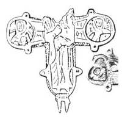

Catalog › CE-1002 · KOR2003-III.1.1.28
Valvă de revers de encolpion fragmentară (fără brațul de sus), imagini standard în relief și niello
sec. XII (1101–1200) · Nijni Arhîz, Republica Karaceaevo-Cerkesă (raionul Zelenciuk), Rusia
single valve of a reliquary cross, aramă; c. XII (1101–1200); found at Nijni Arhîz, Republica Karaceaevo-Cerkesă (raionul Zelenciuk), Rusia.


Identificare
- Categorie
- Valvă izolată
- Material
- Aramă
- Tehnică
- Turnare în relief; Gravare (incizie); Niello
- Stare
- Fragmentară
Iconografie
- Descriere revers
- Valvă de revers de encolpion, fragmentară (lipsește brațul de sus); imaginile în relief și în niello sunt standard.
- Inscripții
- МР ΘҮ; ХС; Л; ПТ РО
- Limba
- Greacă
Datare și atribuire
- Datare
- sec. XII (1101–1200)
- Centru
- Necunoscut
- Tipologie
- Korzukhina–Peskova 2003, tip III 1 1
Descoperire
- Localitate
- Nijni Arhîz
- Regiune
- Republica Karaceaevo-Cerkesă (raionul Zelenciuk)
- Țară
- Rusia
- Context
- Biserică / mănăstire
- Anul
- 1961
Păstrare și referințe
- Bibliografie
- G. F. Korzukhina, A. A. Peskova, Древнерусские энколпионы. Нагрудные кресты-реликварии XI–XIII вв., Sankt-Petersburg, 2003 [Korzukhina–Peskova 2003], p. 105, cat. nr. III 1 1/28, reprodusă la Табл. 57 (planșe, p. 299). Bibliografie citată în sursă: Кузнецов 1968, 80–81, рис. 1, 2.
- Figura
- Табл. 57
- Planșe
- Korzukhina–Peskova 2003, Табл. 57 (planșă fără paginație proprie în PDF; p. 299 tipărită)
- Observații
- Datare după Peskova: sec. XII. Circumstanțe: Săpături V. A. Kuznețov 1961 la biserica nr. 6 de pe fortificație (în absidă, la adâncimea de 0,75 m). Inscripții adâncite: МР ΘҮ, ХС lângă Maica Domnului în încrucișare; în medalionul stâng Л, în cel drept ПТ РО. Desen: V. A. Kuznețov 1968. Coordonate: nu sunt date în sursă.
Citare: Corpus Encolpiorum, CE-1002, Valvă de revers de encolpion fragmentară (fără brațul de sus), imagini standard în relief și niello, --root/piese/KOR2003-III.1.1.28/ (accesat 2026-10-20).